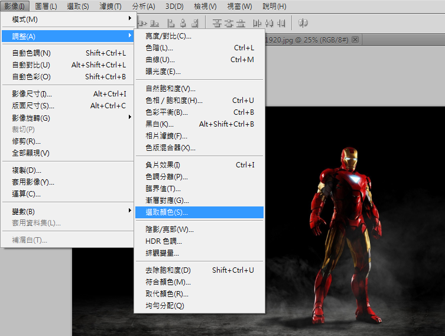
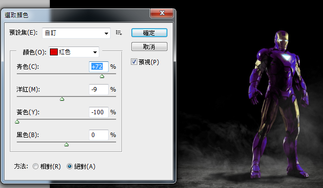
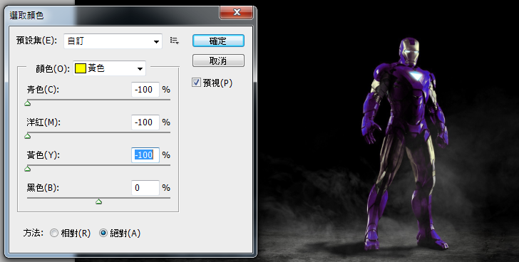
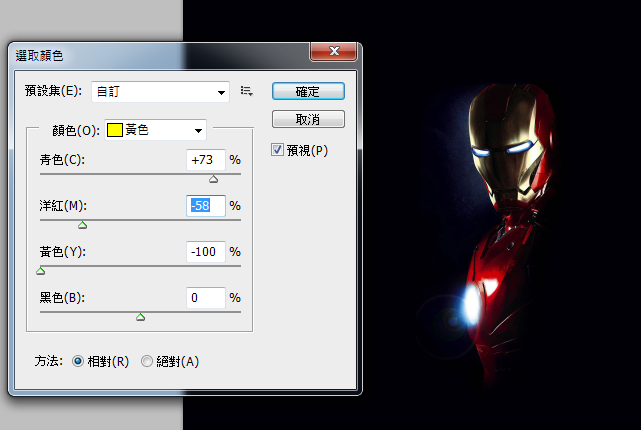
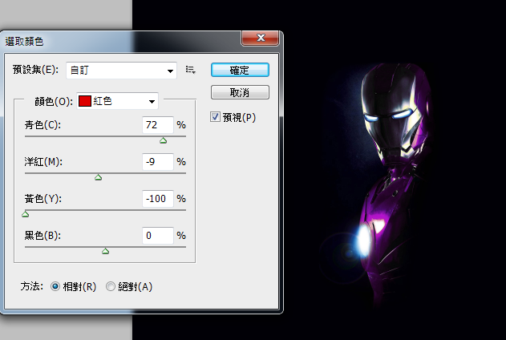
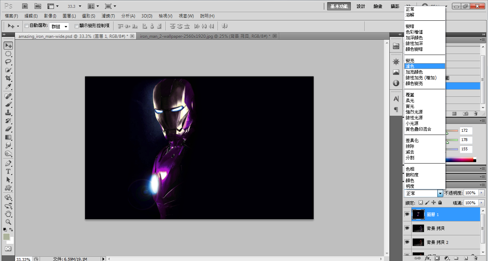
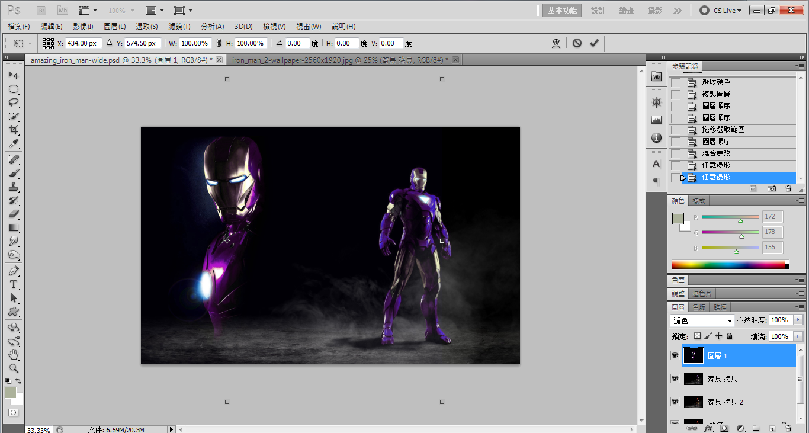
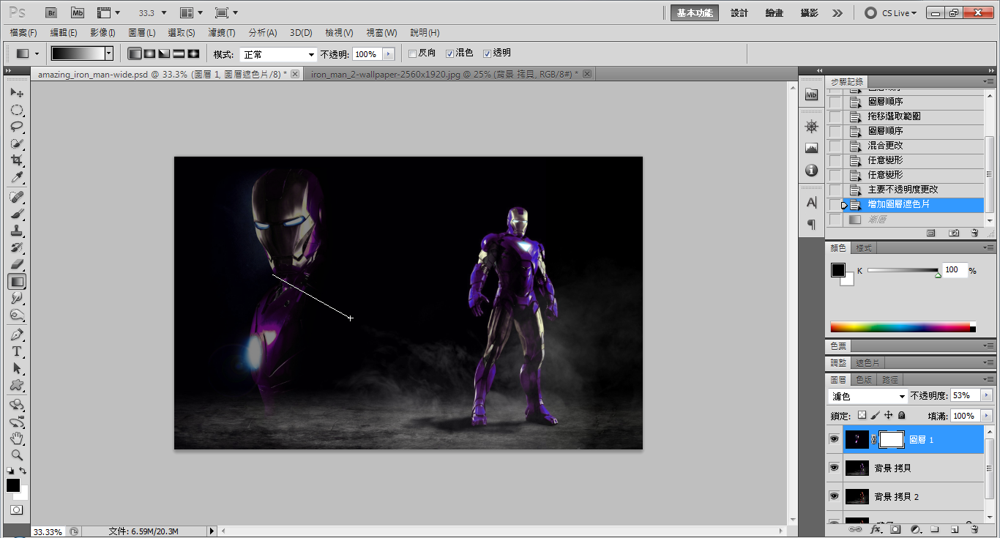
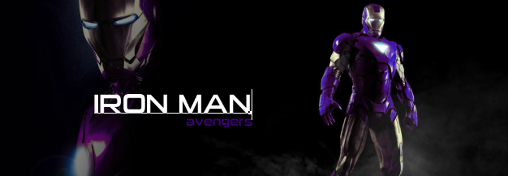

Process Picture
Description
1.因為我想改變鋼鐵俠的顏色，
所以第一步先到 "調整" 下的 "選取顏色"

5.拿出另一張素材，重覆步驟4之參數
7.把剛剛弄好之素材掉進原圖中，
然後把圖層混合模式改為 "濾色"
8.然後調整一下素材與原圖之大小與位置，
可用變形工具調整 (ctrl+t)
9.最後在素材新增遮色片，以黑色漸層拉一直線，
目的是令素材與原圖融合效果更為柔和
Process Picture
|
Description |
|
| 1 |  | 1.因為我想改變鋼鐵俠的顏色， 所以第一步先到 "調整" 下的 "選取顏色" |
| 2 | |
2.然後會到這個介面，作出調整的部分是紅色 |
| 3 |  | 3.然後以圖中之參數調整，使原有的紅色變為紫色 |
| 4 |  | 4.再到黃色介面下，以圖中參數調整，使黃色部分減淡 |
| 5 |  | 5.拿出另一張素材，重覆步驟4之參數 |
| 6 |  | 6.重覆步驟3之參數，使鋼鐵俠轉為紫色 |
| 7 |  | 7.把剛剛弄好之素材掉進原圖中， 然後把圖層混合模式改為 "濾色" |
| 8 |  | 8.然後調整一下素材與原圖之大小與位置， 可用變形工具調整 (ctrl+t) |
| 9 |  | 9.最後在素材新增遮色片，以黑色漸層拉一直線， 目的是令素材與原圖融合效果更為柔和 |
| 10 |  | 10.然後加點字與排版，最終效果 |